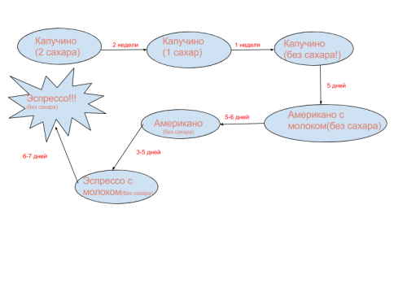

Хочется рассказать Вам кучу своих историй, но боюсь утомить нескончаемыми рассказами, поэтому изложу только основную информацию о себе.
Я родилась в городе Тольятти, окончив школу, поступила в ПВГУС(Поволжский государственный университет сервиса) в том же Тольятти на менеджера.
Как и каждому студенту мне хотелось побольше «карманных» денег. На втором курсе я решила, что надо найти подработку и окунулась на ее поиски. Нашла работу очень быстро, буквально, после первого звонка по объявлению меня пригласили на собеседование. Мне очень понравилось, что работа находилась близко к моему университету. Что же за работа? Бариста!
Эта работа много что перевернула в моей голове. Устроившись в кофейню, я не понимала, кто такой бариста, и, плюс ко всему, я не любила кофе. Когда ты «варишься» в кофейной сфере — рискуешь стать заядлым любителем кофе. В нашей кофейне было очень много сортов кофе разной обжарки ( от светлой до темной и различных моносортов).
Самый первый мой напиток, который я попробовала сама приготовить, и, собственно, выпить — капучино на светлой обжарке: сорт назывался «Ballerina». После этого напитка я уже не могла остановиться и перепробовала все сорта кофе, которые у нас были в кофейне. Хочу показать мой путь от капучино к эспрессо:

До самого окончания университета я работала бариста, очень сильно затянула меня эта сфера. В итоге я около 4-х лет работала «кофеваром».
После окончания университета я совершенно одна переехала жить в славный город Екатеринбург! Мне еще со школьной скамьи нравился этот город и я часто туда ездила со своей двоюродной сестрой в путешествие. На данный момент я тут живу почти два года, мне тут очень хорошо: моя душа на своем месте.
В 2016 году я устроилась работать бариста в очень крутую кофейню, которая находится в СКБ Контуре.Проработав целую неделю там, я познакомилась с интересными и веселыми людьми, которые с головой в мире «айти». Когда я каждый день слышала множество разговоров айтишников, как они увлечены и ответственны, я задумалась, а не попробовать ли мне тоже,так как я размышляла, чем хочу заниматься в дальнейшей жизни. После долгих обдумываний и раздумий мой выбор пал на профессию Тестировщик.
На данный момент (июнь 2017) я работаю тестировщиком в Абак-пресс. Путь был не из легких, но я справилась!
Мои контактные данные для связи: